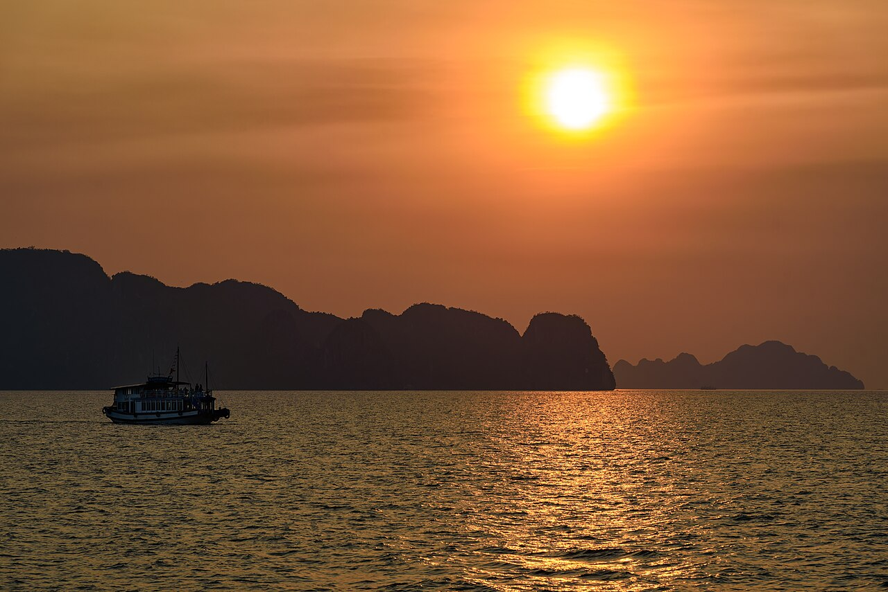
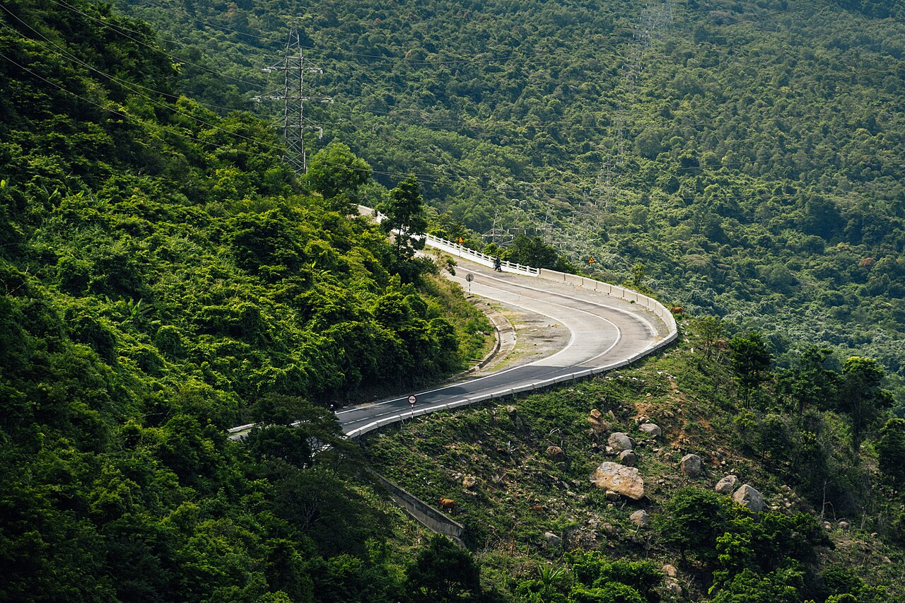
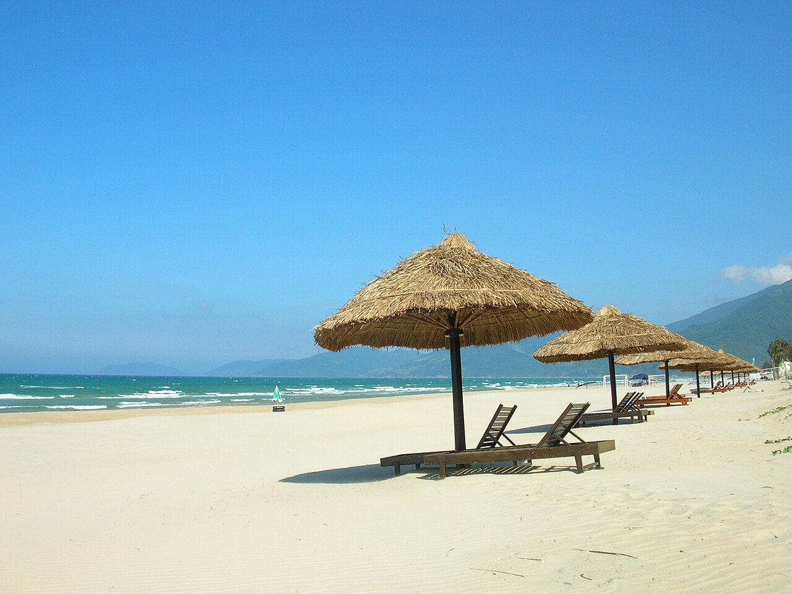
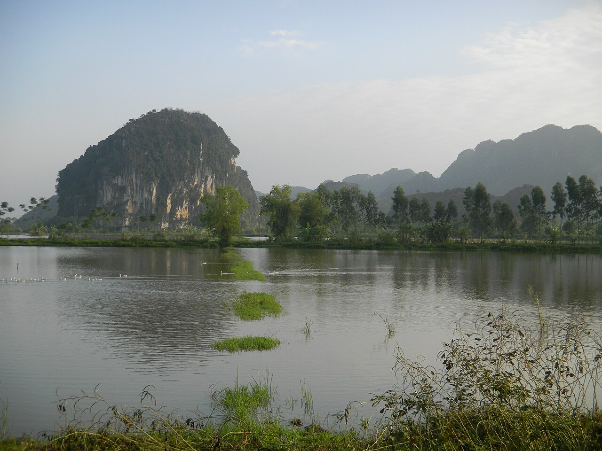

From the limestone towers of Ha Long Bay to the lantern glow of Hoi An, Vietnam rewards travelers who take their time. Ride the Hai Van Pass for sweeping ocean views, rest on the sand at Lang Co, then trade the coast for the terraced hills of Sapa and the quiet waterways of Ninh Binh. These places show how much variety one country can hold, and each one is worth a stop of its own.




